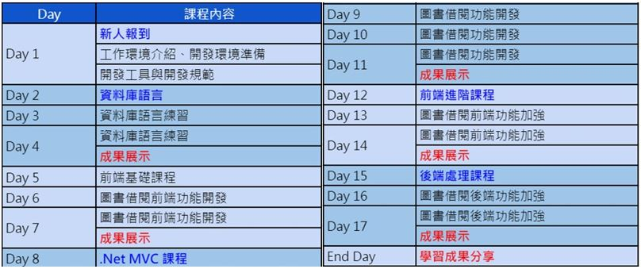
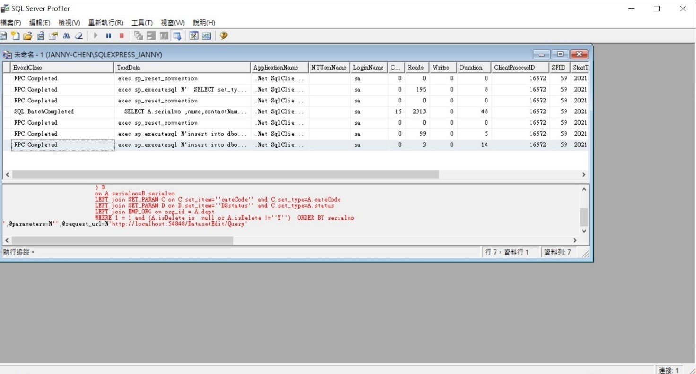
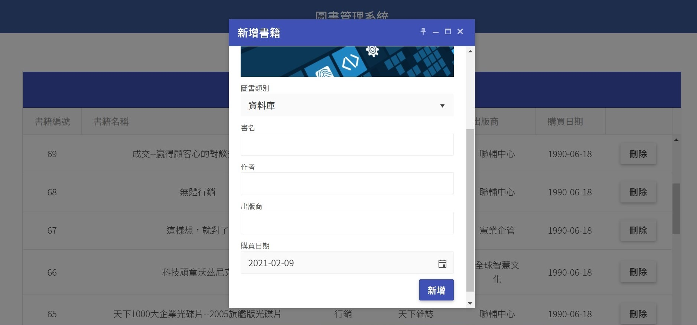
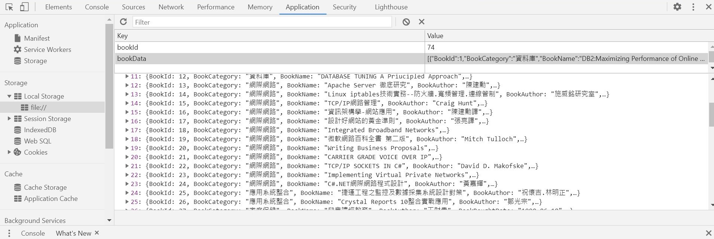
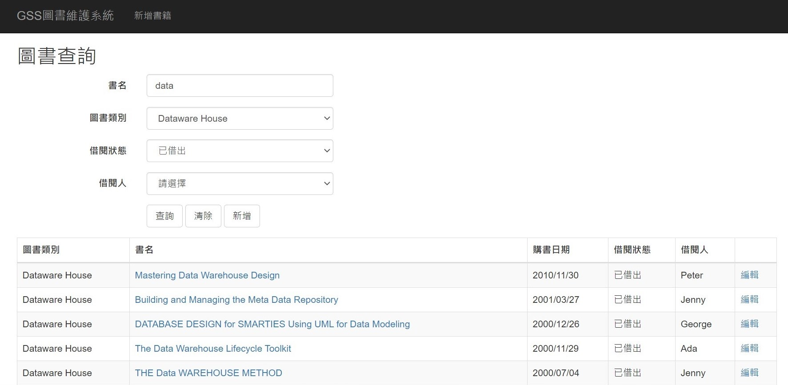
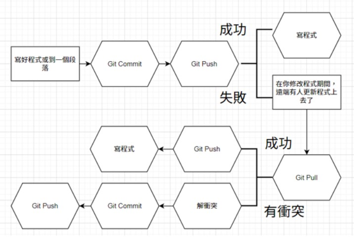

陳宜湞 Janny
YZUIM 3B
1071702
叡揚資訊 GSS
叡揚資訊股份有限公司在台北及高雄都有營業據點，且在台北有三個辦公地點，包含德惠大樓（總部）、協志大樓、台銀大樓，這三棟大樓之間的距離不遠，而總部的地址為台北市中山區德惠街9號5樓。
寒假期間所有實習生都在協志大樓的辦公室進行新人訓練，結束新人訓練後會將每個人分發到不同部門，我分配到的部門是SDOBG，駐點在科技部裡的資訊處，所以我上班的地點並不是在叡揚的這三棟大樓，而是位於台北市大安區和平東路二段106號的科技大樓。
資訊處在科技大樓裡的17樓，每天都有清潔人員來收垃圾、打掃廁所及茶水間很多次，所以環境很乾淨。如果沒有帶便當去蒸的話，科技大樓後面的路上也有很多吃的可以買，不過因為附近就是北市大、台大、師大還有許多上班族，如果太晚下去買的話可能會沒位置。
一開始寫報表時因為不熟悉DevExpress怎麼使用所以連怎麼調整Band的高度、怎麼在Expression裡寫if-else等等基本的問題都需要問主管，進入狀況後除了偶爾有些規格或是資料不齊全的問題之外，後面的報表幾乎都可以自己獨立完成，有時候碰到主管沒遇過的狀況時也可以靠自己查資料解決，這就是我最主要的工作。
主管有時候也會從她的工作中分一些比較簡單的東西給我寫，其他同事也有找我幫忙寫過幾張報表以及修改寫錯的Stored Procedure。雖然這些工作都不是很複雜的問題，但因為每當我接觸一個新的系統時都需要一段時間才能搞懂這個系統的架構、邏輯及規則等，有時候甚至需要花上一整天才能解決一個小問題，不過這樣的過程也讓我更了解一個完整的網頁架構應該長什麼樣子、發現很多聰明方便的程式邏輯，一邊找問題的同時也在一邊學習其他人的智慧。
在1/18到2/9的18天中，來自各個學校的實習生都聚集在一起進行新人訓練課程，課程內容主要分成五堂課：資料庫語言(SQL)、前端基礎課程(Front End Basic)、.Net MVC課程、前端進階課程(Front End Advanced)、後端處理課程(Back End)。每堂課都會先看教學影片、再來寫Workshop的作業、最後進行CodeReview檢討每個人的程式碼。
到了科技部後，我負責的工作是將原本使用舊的報表工具(Crystal Report)製作的每張科發基金報表，利用MVC及.NET 平臺的使用者介面套裝軟體(DevExpress)重新製作一份。我在製作報表時的步驟如下：
除了寫報表外，帶我的主管也會讓我試著改別的程式，像是政府資料開放管理系統的網頁，以下是我在這個網頁寫過的功能：
在學校時就已經學過基本的SQL語法(新增、刪除、修改、查詢)，在新人訓練時又教了更多沒碰過的東西，像是子查詢、PIVOT、Transactions等用法。在公司寫程式時除了功能需要正確外，也要注意效能的問題，還有許多快捷鍵用法都可以讓我們在寫程式時更有效率，例如：Ctrl+R可以收起SQL查詢結果的區塊、選取Table名字再按Alt+F1可以查看Table的資料型態。
在部門裡幫同事寫報表時也學到了一個非常好用的工具SQL Server Profiler，只要開啟這個工具就可以錄下這段時間裡資料庫執行的所有事情，如果網頁寫到一半發現資料出不來，或是維護其他人寫的系統卻不知道這筆資料是如何產生的時候，都可以使用這個工具檢查資料庫執行過什麼語法，再將這段語法貼到SQL裡執行就可以很清楚的看到結果，問題出在哪裡都一目了然。
這堂課主要教了KendoUI套件以及LocalStorage，KendoUI套件讓我們不用在特別設計就可以在網頁上使用漂亮的元件，而LocalStorage則是將資料儲存在用戶端的瀏覽器中，不需要連接到遠端資料庫就可以在網頁上運用資料。
 MVC架構主要分成Model、Controller、View三層，一開始接觸的時候完全搞不懂這三層之間的關係，花了一段時間搭配中斷點看範例程式後才比較清楚知道每一層的作用，以及要怎麼使用這個架構。這堂課是讓我最挫折但也是收穫最多的課，CodeReview時不管是主管提醒或觀察其他實習生的程式碼，都會發現自己還有許多小細節沒有想得周全。
在實習前我就很好奇要如何很多人一起開發程式，以前遇到需要寫程式的分組報告作業時，因為不知道該怎麼分工通常都會只有一個人負責寫程式，其他人想幫忙也不知道該怎麼下手。在新人訓練的第一堂課就教我們怎麼使用版本控制，也實際讓我們用練習用Git上傳自己的Workshop作業，進入部門後是使用SVN上傳自己完成的部分。
學會了版本控制後這學期與同學參加的比賽和專題就有使用GitHub一起開發程式，雖然一開始大家都還不太會用，導致情況有點混亂，但是搞懂以後就覺得這樣分工寫程式的感覺非常好。未來進入許多資訊公司應該都會接觸版本控制，除了可以分工以外，GitHub也可以保存自己寫過的作品集，所以我覺得這是一項非常值得學習且實用的工具。
在新人訓練時，我遇到最大的困難就是時間管理，因為每堂課都只有三天的時間，有時候一堂課的教學影片可能就有10幾部，再加上Workshop的作業，讓我常常到了CodeReview時作業都還有許多小細節沒辦法做到最好，只能說是「寫完」而不是「寫好」。
這也是我認為在公司實習與在學校寫程式作業最大的不同，以往在學校做專題作業時只要有完成老師要的功能、能跑出正確的結果就能拿到不錯的分數，但是在公司時完成這些都只是最基本的，要設想各種會發生的錯誤情況，避免使用者使用時噴錯，不只破壞使用者體驗，還有可能造成資安漏洞。程式碼的命名、排版要清楚易讀且明確、重複性高的程式碼抽共用、可以合併幾個相似的頁面等等，這些小細節都是非常重要的，在CodeReview時主管都會一一提出來，引導我們思考：如果發生某種情況該怎麼辦、程式是不是有更好的寫法，在看其他人的程式碼時也很常覺得原來還有這種寫法、原來這個問題可以這樣解決等等。
在分發到部門支援後的第一個禮拜，只有我被分配到不一樣的地點有點慌張，不像之前可以和許多朋友一起上下班，但是這裡的主管人都很親切，也很常帶著我出去吃午餐，在工作上也很仔細地告訴我應該怎麼做，有問題的時候也願意放下手邊的事聽我說話。
不過我覺得下部門和新人訓練時也很不一樣，新人訓練的主管們會一直強調有問題就要趕快去問，要設停損點不要自己硬撐太久反而浪費時間，因為他們這段時間主要工作就是訓練實習生，所以有問題的話都可以很放心地去問。但是在部門工作時主管同事們都有自己的事要忙，常常我有問題時他們正在跟其他人討論事情，因為不好意思打斷也不想讓他們忙不過來，就會先找事做、或繼續查資料找解決方法，等到主管有空時再一次把多個問題問完也比較有效率，而且為了不浪費時間，也一定要清楚自己的問題到底是什麼，自己先想過一遍後再和主管討論也會比較順利。
在學校寫作業時，因為是自己規劃的內容所以遇到真的寫不出來的部分時可以將功能精簡，但在公司時就必須照著需求寫，所以遇到問題時想盡辦法都要解決。查資料的過程我越來越懂得如何下查詢關鍵字可以得到我需要的答案，現在需要問主管問題的次數也比剛開始少很多，可以自己獨立解決許多問題讓我覺得很有成就感。
開始實習後，接觸到的主管、同事、實習生們都很厲害，讓我覺得自己以前就像井底之蛙一樣，還有很多不足、很多東西需要學習，在我覺得很挫折的時候主管就告訴我不用和其他學長姐(其他實習生都比我們大)比較，把自己寫的程式碼搞清楚、保持好習慣才是最重要的。在這段時間接觸許多網頁程式後，我發現我在使用各種網頁時會開始觀察網頁的功能並在心裡稍微想一下這個功能是怎麼做的，看見網頁的小缺點時也會思考為什麼會這樣、該怎麼避免等，希望自己在寫網頁的時候盡量不要發生這些錯誤。
不得不說系上對於校外實習的一系列安排已經算是非常完整，讓我們可以不用花費太多心力就進入公司實習，再加上叡揚本身對於實習生的安排已經有完善的流程，所以實習期間裡我並沒有遇到什麼問題。像是五月時疫情嚴重，我的主管也早在系辦要求所有實習公司改為遠距實習或暫停實習之前就安排我在家上班，而系辦希望各公司不要讓學生去公司上班的行為也讓我覺得很貼心，我想先謝謝系辦以及叡揚的主管。
但是我也有聽聞系上有同學因為這次疫情而被迫終止實習，除了影響到他本身生活的各種安排外，往後所有需要藉由實習得到的學分都必須自己另外修課取得。雖然與實習廠商的合約裡有提到不論是學生或公司只要提前一星期通知對方，就可以解除實習約定，但站在學生的立場，因為我們還有學分需求，這條規定對我們來說似乎沒有保障。
所以我建議系辦在挑選實習廠商的時候是不是能夠確保每間公司的確需要且能夠負擔雇用實習生一年裡的各種成本(包括薪水、教學時間等)，再開設職缺給我們面試，我想這樣也較能避免類似這次學生由於公司因素被迫終止實習的事件，以及先前發生過有間公司面試完後已經送出正備取名單，最後公布卻沒有錄取任何一名實習生，這種不是從缺卻不錄取任何一個學生的行為會讓我們覺得好像浪費了一個實習志願給這間公司，也白費了所有為這間公司準備履歷及面試的心力，甚至可能造成學生最後沒有錄取任何一間公司，希望系辦能在這部分多做點相關的應對方式，保障我們的權益。
另外還有一點是，期初工作報告檔案中包含每個人的住家電話、地址等私密的個人資料，但是期初報告上傳的位置卻是半公開的狀態，系上近百人都可以任意瀏覽下載他人的檔案，我想這個做法還有很大的改善空間，也許可以參考之前繳交履歷時，同樣也是上傳檔案到伺服器位址，那次就沒有辦法任意下載別人的檔案，這樣的作法應該會比較妥當。